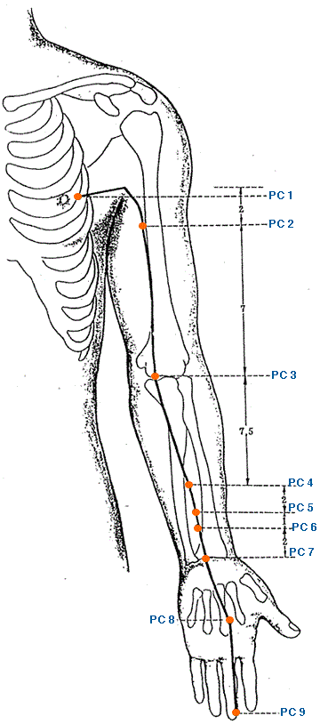

|

|
Meridian Point : PC-1
Location: 1 cun lateral to the nipple in the 4th ICS.
English Name: Celestial Pool
Pinyin Name: Tian Chi
Actions & Effect:
Window of the Sky Point, fullness of the chest, counterflow qi, headache, axillary sweating, blurred vision.
Breast disorders, insufficient lactation.
Disease
Laryngitis, mastitis, breast feeding problems, cough, chest congestion, asthma
Meridian Point : PC-2
Location: 2 cun below the end of the anterior axillary fold between the two heads of the biceps brachii muscle.
English Name: Celestial Spring
Pinyin Name: Tian Quan
Actions & Effect:
Local Point.
May be used for angina
Disease
Distention of the hypochondriac region, cough,
Meridian Point : PC-3
Location: On the transverse cubital crease on the ulnar side of the biceps brachii tendon.
English Name: Marsh at the Bend
Pinyin Name: Qu Ze
Actions & Effect:
Chronic angina.
Tremors of the hand a/or arm, Parkinson's disease.
Gastrointestinal disorders, "sudden turmoil disease" - vomiting and diarrhea.
Clears Ying Stage Heat.
Disease
Angina pectoris, palpitation, stomach ache, vomiting, diarrhea
Meridian Point : PC-4
Location: 5 cun above the wrist crease between the tendons of palmaris longus and flexor carpi radialis.
English Name: Xi Cleft Gate
Pinyin Name: Xi Men
Actions & Effect:
Acute palpitations, angina.
Acute heat in the Blood, coughing or vomiting of Blood, bleeding hemorrhoids.
Spirit disorders typically due to Blood stasis, yin spirit problems, depression, fear of people, grief.
Disease
Angina pectoris, palpitation, epilepsy, chest pain
Meridian Point : PC-5
Location: 3 cun above the wrist crease between the tendons of palmaris longus and flexor carpi radialis.
English Name: Intermediary Courier
Pinyin Name: Jian Shi
Actions & Effect:
Phlegm issues effecting the chest, heart, lungs a/or throat.
Heat disorders effecting the heart, chest pain, restlessness, insomina, red tongue tip.
Sudden heart pain, angina.
Wheezing with phlegm that you can feel and hear, combine with CV 22.
Distal point for enlarged thyroid.
Disease
Angina pectoris, palpitation, stomache ache, mania, malaria
Meridian Point : PC-6
Location: 2 cun above the wrist crease between the tendons of palmaris longus and flexor carpi radialis.
English Name: Inner Pass
Pinyin Name: Nei Guan
Actions & Effect:
Similar to PC 3 but more for Chronic Heart symptoms from Qi stagnation.
Opens and relaxes the chest, chest tightness, asthma, angina, palpitations.
Insomnia a/or other spirit disorders of an excess or deficient nature, mania, nervousness, stress, poor memory.
Nausea, seasickness, motion sickness, vomiting, epigastric pain.
Carpal Tunnel Syndrome.
Disease
Angina pectoris, palpitation, stomache ache, vomiting, hiccup, insomnia, dizziness, epilepsy, migraine
Meridian Point : PC-7
Location: In the middle of the wrist crease between the tendons of palmaris longus and flexor carpi radialis.
English Name: Great Mound
Pinyin Name: Da Ling
Actions & Effect:
Cooling heat that is effecting the Heart of a deficient or excess nature.
Clears Ying and Blood heat, fever deep in the body that is drying up fluids.
Carpal Tunnel Syndrome, combine with PC 5, PC 6 & SP 9.
Tong Ren/Tam Healing System: Emotional issues, w/HT 7 for sweat issues (too much or too little), hot flashes.
Disease
Angina pectoris, palpitation, stomache ache, vomiting, mania
Meridian Point : PC-8
Location: At the center of the palm between the 2nd and 3rd metacarpal bones closer to the radial side of the 3rd, where the tip of the middle finger falls when a loose fist is made.
English Name: Palace of Toil
Pinyin Name: Lao Gong
Actions & Effect:
Excess heat conditions, more cooling than PC 7 which can be used for heat from an excess or deficient issue.
Heat in the mouth, mouth or tongue ulcers, cold sores from Heart or Stomach Fire.
Cools Ying and Blood stage heat, fevers with damage to the yin.
Cools the Blood, blood in the stool or urine, nosebleeds.
Tong Ren/Tam Healing System: Important point for qi gong healing, can increase internal energy by placing PC 8 on GV 20.
Disease
Angina pectoris, palpitation, vomiting, foul breath, oral ulcer, sunstroke, mania, epilepsy, toothache
Meridian Point : PC-9
Location: In the center of the tip of the middle finger.
English Name: Central Hub
Pinyin Name: Zhong Chong
Actions & Effect:
Jing Well Point for clearing heat in the Heart.
Stiff tongue, speech disorders, especially those arising after a stroke.
Restoring consciousness.
Disease
Angina pectoris, coma, sunstroke, infantile convulsion, stiffness and swelling of the tongue
|